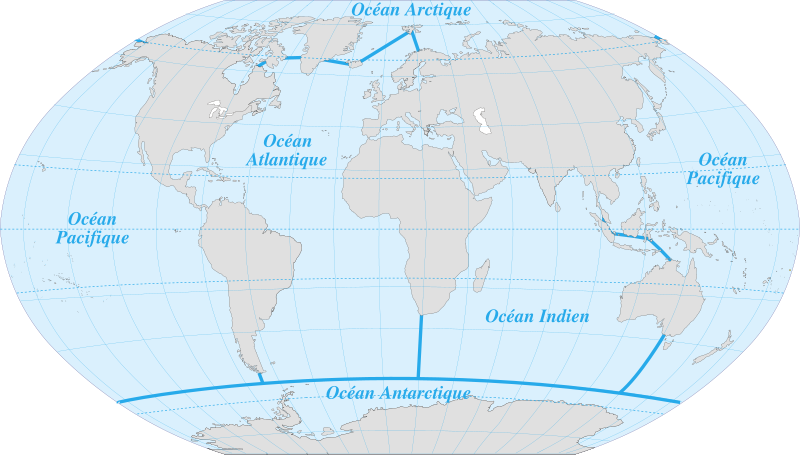

Les Océans
A propos
Sommaire :
Veuillez sélectionner l'océan de votre choix.
Océan Pacifique
Le plus vaste et le plus profond
Océan Atlantique
Le deuxième plus grand, séparant les Amériques de l'Europe et l'Afrique
Océan Indien
Situé entre l'Afrique et l'Australie
Océan Arctique
Le plus petit, le moins profond et le plus froid
Océan Austral
Entoure de continent de l'Antarctique
Carte des océans du monde
